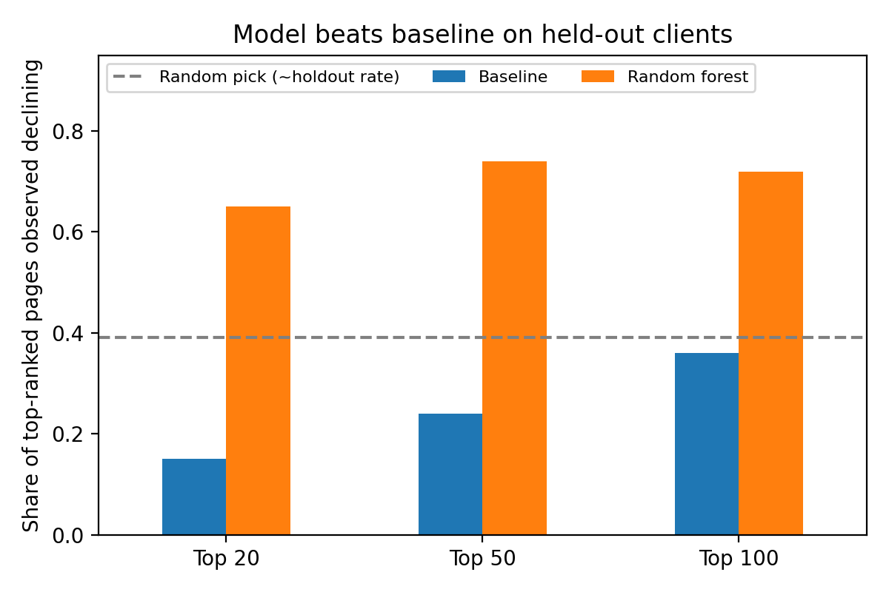

Ranking Declining Content Pages: Observable Signals vs a Transparent Baseline
Muhammad Laeeq ur Rehman · FlyRank Machine Learning Internship · October 2026
Abstract
Can observable page signals rank content pages that are observed to be declining better than a transparent baseline score? We used an anonymized slice of 30,000 content pages from 32 clients, trained logistic regression, decision tree and random forest models, and tested them on held-out clients (2,325 pages from 6 clients) against a weighted visibility, freshness and position score. The random forest ranked best: 74% of its top 50 pages were observed declining versus 24% for the baseline and about 39% for a random pick, with ROC AUC 0.750 versus 0.627. The model was selected on the same split and the top-50 sample is small, so these results are directional rather than production evidence. They support using the model ranking as a decision aid for ordering refresh reviews, not as proof that refreshing a page improves its trend.
1 Introduction
A content team with thousands of published pages cannot review them all. The practical question is which pages to look at first. This paper asks whether observable page signals (age, freshness, visibility, search position, content type) can rank pages that are observed to be declining better than a transparent weighted score, so that a team can order its refresh reviews. A hand-written score fixes its weights in advance; a model can combine many signals and be tested on clients it has never seen.
2 Data
The data is the anonymized starter slice of the FlyRank ML Internship dataset: 30,000 content items from 32 clients and 44 columns, one row per pseudonymized page. It reports 90-day search and engagement metrics plus last-30 and previous-30-day comparisons. It has no calendar date column, so validation is by client, not by date. Client names, domains, URLs, titles and queries were removed before release.
Excluded as features: hashed content and client IDs (used only for grouping); trend fields (trend_direction, trend_pct), because the label is derived from them; and last-30 and previous-30-day comparison columns, to avoid indirect leakage into the label. No rows were dropped (30,000 raw, 30,000 prepared; no duplicate page IDs). The columns with the most missing values are the content provider (71.5%) and word and character counts (25.7%).
3 Methodology
Assumptions and label
A page whose observed 90-day trend direction is “down” is called declining (trend_direction == 'down'). 54.2% of pages are positive. The slice is treated as representative enough for a first, directional analysis.
Features
26 model inputs: 18 numeric (visibility, clicks and sessions on log scale, active days, age, days since update, CTR, average position, engagement, scroll, AI traffic share, word and character counts, search volume, competition, CPC) and 8 categorical (competition level, content type, intent, and age, freshness, word-count, impression and position tiers). One-hot encoding gives 52 columns.
Baseline
A transparent weighted score: 40% visibility (percentile of log 90-day impressions), 30% freshness risk (percentile of days since last update), 25% position opportunity (closeness to the top positions, weighted by visibility) and 5% depth gap (thin content weighted by visibility). Pages are ranked highest score first. The score does not use the label or any trend field.
Validation design
A client-holdout split with seed 42: 27,675 training pages and 2,325 test pages from 6 clients the models never saw. Logistic regression, a decision tree and a random forest were compared with the baseline on the same test pages.
Leakage checks
Trend fields and last-30 and previous-30-day columns are excluded from features, hashed IDs are used only for grouping, and a code check in the notebook confirms that none of these columns is among the 26 model features.
4 Results
Because the use is a review queue, the main metric is precision at top k: the share of the k highest-ranked pages that are observed declining. ROC AUC checks the whole ranking. About 39% of test pages are observed declining (54% across all pages), so a random pick of k pages would score about 0.39.
| Method | ROC AUC | Avg. precision | P@20 | P@50 | P@100 | Recall |
|---|---|---|---|---|---|---|
| Baseline score | 0.627 | 0.468 | 0.15 | 0.24 | 0.36 | 0.189 |
| Logistic regression | 0.700 | 0.522 | 0.35 | 0.40 | 0.44 | 0.567 |
| Decision tree | 0.742 | 0.575 | 0.45 | 0.58 | 0.62 | 0.716 |
| Random forest | 0.750 | 0.618 | 0.65 | 0.74 | 0.72 | 0.744 |

The random forest ranks best on every ranking metric. The baseline’s top-ranked pages were observed declining less often than a random pick (0.24 and 0.36 against about 0.39), so in this slice its ordering was not useful for finding declining pages. Logistic regression separates pages better than the baseline overall (AUC 0.700), but its top 50 is only near random level (0.40). These are directional results: the forest was chosen by P@50 on this same test split, and P@50 rests on 50 pages, roughly ±0.06 of sampling noise.

5 Limitations and honest framing
- Observed, not causal. The label is an observed downward trend. This work does not show that refreshing a page causes recovery.
- Model chosen on the reporting split. The best model was picked by precision@50 on the same held-out clients used to report results, so its score is somewhat optimistic.
- Small top-k. Precision@50 rests on 50 pages (roughly ±0.06 noise).
- Small, anonymized slice. 30,000 pages from 32 clients; the test split is 2,325 pages from only 6 clients. Results are directional, not production evidence.
- Client effects. The test clients have a lower declining rate (about 39%) than the full data (54%). Errors may cluster by client, and new clients may behave differently.
- Feature importance is association. Importances come from a model refit on all 30,000 pages; their direction was not tested.
- The refresh queue is illustrative. Queue scores for all pages come from models refit on all rows, so scores for training clients are in-sample. The queue shows the workflow, not a performance estimate.
- Reason codes are descriptive. Some codes (for example “declining with demand”) are derived from the observed label and are not model findings.
- Label and time. “Declining” depends on how trend direction was computed upstream, and the slice has no calendar dates, so time-based validation was not possible.
6 Ranked recommendations
Ordered by how well the evidence supports them. All are decision-support, not causal claims.
- Order the first review batch with the model ranking, not the baseline score. The forest’s top 50 was 74% observed declining against 24% for the baseline and about 39% for a random pick. Confidence: medium, because the model was selected on the same split and the top-50 sample is small.
- Retire the baseline score as an ordering rule. Its top 20, 50 and 100 were observed declining less often than a random pick (0.15, 0.24, 0.36 against about 0.39); ROC AUC 0.627. Confidence: medium.
- Look first at visible pages: many days with impressions and high 90-day impressions. These are the two strongest model signals. Confidence: medium-low; importance shows what the model used, not direction or cause.
- Check pages with weaker search position and older content next. These are the next strongest signals. Confidence: low; direction was not tested, so inspect a sample before acting.
- Re-test on new clients and a later time window before using the ranking operationally. The evidence rests on 32 clients, 6 test clients, one slice, no dates and a model chosen on the reporting split. Confidence: high that this check is needed.
7 Reproducibility
Everything is in the public repository data00077/flyrank-ml-internship. The main notebook is work/notebooks/capstone.ipynb. It clones the repository, runs the pipeline scripts in scripts/ (feature preparation, baseline, model training, evaluation) and reproduces every number and chart on this page. Earlier weekly notebooks in work/notebooks/ cover the data contract, baseline, model and validation audit. The random seed is 42 and the bundled data is the anonymized starter CSV only.